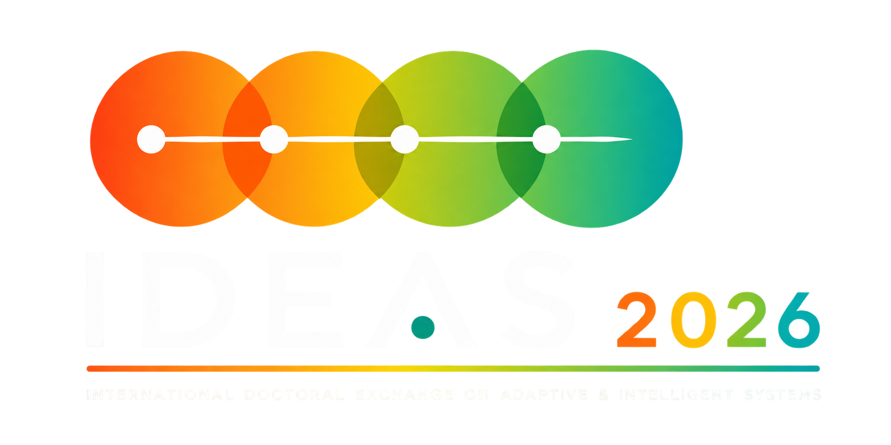
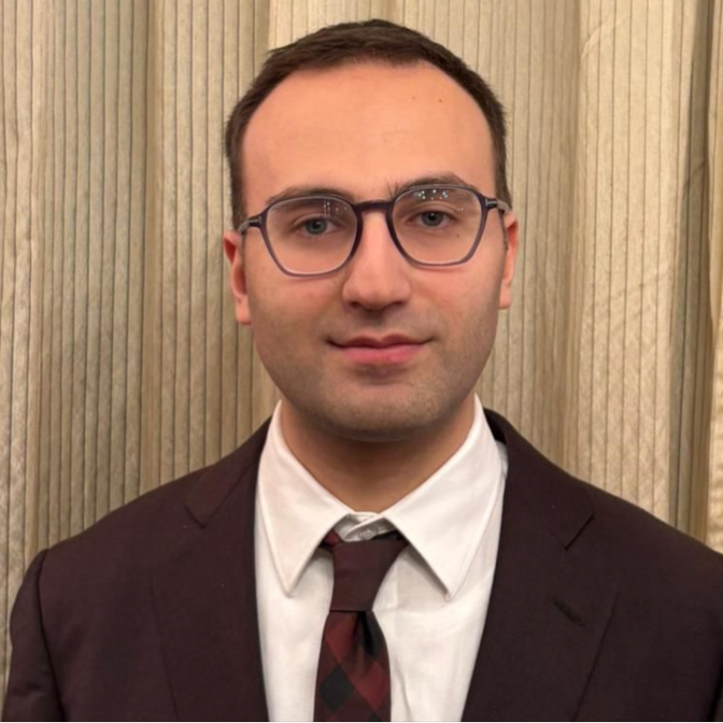
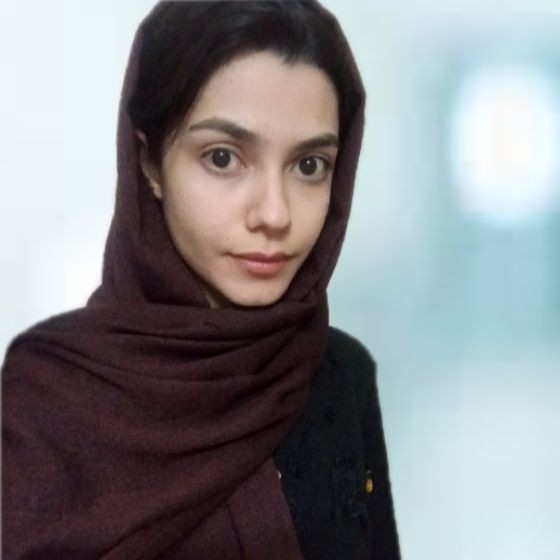

Doctoral Exchange Week

Everything you need to know about the 2026 edition: schedule and organizing committees.
- 31 August – 4 September 2026
- DIEM, University of Salerno, Fisciano (SA), Italy
- In-person
Theme
IDEAS 2026 brings together doctoral researchers working on adaptive and intelligent systems, from machine learning and knowledge management to human-centred AI and decision support. The week combines invited talks, PhD seminars and hands-on sessions hosted by the KnowMIS lab at DIEM, University of Salerno.
Program
The day-by-day schedule for IDEAS 2026. Times may be adjusted closer to the event.
Monday, August 31
IntroductionD. Söffker, G. D'Aniello
Ice-breaking: Scientific Taboo
Control and supervision of complex elastic mechanical systemsR. D. Chooach
Lunch
Methods for determining and controlling situational risks of autonomous, highly and partially automated, and assisted vehicle systemsO. Shyshova
Cyber-Physical-Social System (CPSS) to Support Situation Awareness in AI-augmented JournalismR. Gaeta
Coffee Break
Unsupervised vibration-based structural damage identification using deep learning algorithms and one-class classification techniquesZ. Rastin
Walking tourSalerno
DinnerLa Botte Pazza
Tuesday, September 1
Intelligent energy management system for consumption and renewable energy production using MPC models, machine learning and forecasting methodsI. Benrabia
A Situation Awareness Framework for City BrandingA. Polverino
Break
Modern methods in control and automationM. Szkatula
Lunch
Bus from Fisciano to Salerno train station
Train to Naples
Tour of Naples historic centerPlus pizza
Train to Salerno
Wednesday, September 2
Algorithms for robust positioning and trackingN. S. Thind
Talk (title to be confirmed)M. Zarei
Break
Machine learning-based modeling of consolidated bioprocessing for bioproductsM. Yeboah
Lunch
Situation Awareness for Trustworthy Recommender SystemsL. Aliberti
Talk (title to be confirmed)M. Yousefzadeh Paein Roud Poshti
Break
Exploring AI in Research: Experiences and Open Discussion
Thursday, September 3
Machine learning-based Structural Health Monitoring using Acoustic EmissionJ. Liebeton
Physiological Monitoring of Situation Awareness for Adaptive Human–System InteractionM. Della Corte
Break
Enhancing wind turbine control through digital twin and reinforcement learningR. Al Gburi
Lunch
Bus to Salerno Concordia
Ferry to Amalfi
Amalfi tour
Ferry to Salerno
Friday, September 4
Prediction of the driving behavior of inland vessels by means of machine learningK. Donandt
CONSALE: A Goal-Driven Framework for Situation-Aware Adaptive MicrolearningR. Falcone, C. Murati
Break
The combination of model-free with model-based controlS. Salighe
Lunch + Photo
Teamworking: Paper Construction
Committee
The people organizing IDEAS 2026.
Organization Committee
Prof. Giuseppe D'Aniello
Prof. Dirk Söffker
Operational Support Committee
RC
R. D. Chooach

AP
Alessandro Polverino
